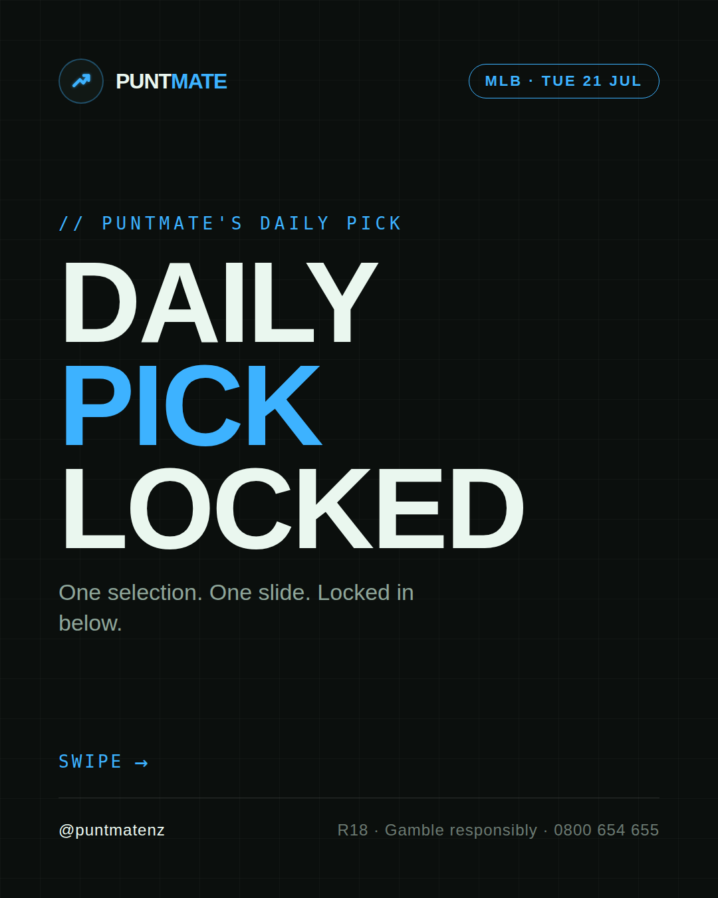
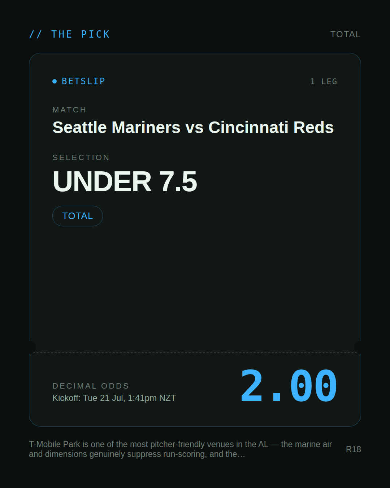
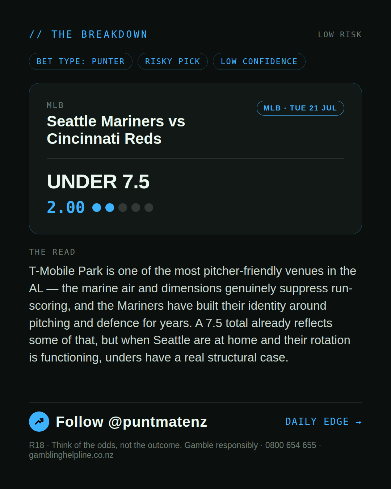
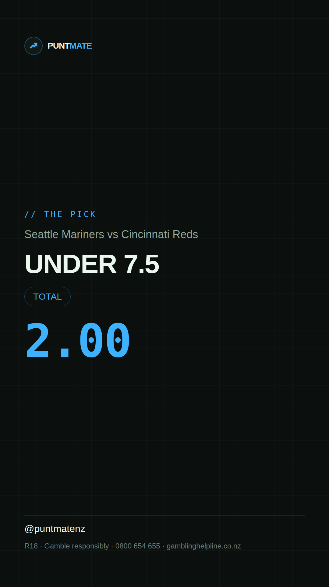

*🎯 PUNTMATE NZ — MLB* 🏟 Seattle Mariners vs Cincinnati Reds *PICK:* UNDER 7.5 *ODDS:* 2.00 (Total) *BET TYPE: PUNTER* _T-Mobile Park is one of the most pitcher-friendly venues in the AL — the marine air and dimensions genuinely suppress run-scoring, and the Mariners have built their identity around pitching and defence for years. A 7.5 total already reflects some of that, but when Seattle are at home and their rotation is functioning, unders have a real structural case._ ────────────────── 📲 Join Telegram for daily picks R18 · Gamble responsibly · Problem Gambling Foundation NZ: 0800 664 262
🎯 MLB — Seattle Mariners vs Cincinnati Reds UNDER 7.5 @ 2.00 (Total) BET TYPE: PUNTER Solid touch here. Not a lock, but the value's real and the form backs it up. T-Mobile Park is one of the most pitcher-friendly venues in the AL — the marine air and dimensions genuinely suppress run-scoring, and the Mariners have built their identity around pitching and defence for years. A 7.5 total already reflects some of that, but when Seattle are at home and their rotation is functioning, unders have a real structural case. Follow for daily value picks → @puntmatenz Problem Gambling Foundation NZ: 0800 664 262 #PuntmateNZ #SportsBetting #NZTAB #MLB
| has_pick | True |
| pick_id | 2026-07-20_Seattle_Mariners_vs_Cincinnati_Reds |
| run_id | 29787651395 |
| generated_at | 2026-07-20T23:36:36.966350+00:00 |
| post_date | 2026-07-20 |
| match | Seattle Mariners vs Cincinnati Reds |
| sport | baseball_mlb |
| sport_label | MLB |
| market | Total |
| selection | UNDER 7.5 |
| odds | 2.00 |
| bet_type | PUNTER_BET |
| bet_type_label | BET TYPE: PUNTER |
| bet_type_reason | Solid touch here. Not a lock, but the value's real and the form backs it up. T-Mobile Park is one of the most pitcher-friendly venues in the AL — the marine air and dimensions genuinely suppress run-scoring, and the Mariners have built their identity around pitching and defence for years. A 7.5 total already reflects some of that, but when Seattle are at home and their rotation is functioning, unders have a real structural case. |
| classification | RISKY_PICK |
| risk | RISKY_PICK |
| confidence | LOW |
| confidence_label | LOW |
| final_explanation | T-Mobile Park is one of the most pitcher-friendly venues in the AL — the marine air and dimensions genuinely suppress run-scoring, and the Mariners have built their identity around pitching and defence for years. A 7.5 total already reflects some of that, but when Seattle are at home and their rotation is functioning, unders have a real structural case. |
| public_caution | Keep this one light — the value's there but so is the uncertainty. |
| theme | night |
| carousel_paths | ['data/review/2026-07-20_Seattle_Mariners_vs_Cincinnati_Reds/cover.png', 'data/review/2026-07-20_Seattle_Mariners_vs_Cincinnati_Reds/tip.png', 'data/review/2026-07-20_Seattle_Mariners_vs_Cincinnati_Reds/breakdown.png'] |
| carousel_urls | ['https://raw.githubusercontent.com/kingofthecastle24/puntmate/main/data/cards/2026-07-20_Seattle_Mariners_vs_Cincinnati_Reds_night_1_cover.png', 'https://raw.githubusercontent.com/kingofthecastle24/puntmate/main/data/cards/2026-07-20_Seattle_Mariners_vs_Cincinnati_Reds_night_2_tip.png', 'https://raw.githubusercontent.com/kingofthecastle24/puntmate/main/data/cards/2026-07-20_Seattle_Mariners_vs_Cincinnati_Reds_night_3_breakdown.png'] |
| story_path | data/review/2026-07-20_Seattle_Mariners_vs_Cincinnati_Reds/story.png |
| story_url | https://raw.githubusercontent.com/kingofthecastle24/puntmate/main/data/cards/2026-07-20_Seattle_Mariners_vs_Cincinnati_Reds_night_story.png |
| intended_platforms | ['telegram', 'instagram_feed', 'instagram_story', 'facebook'] |
| workflow_state | GENERATED |
| has_punter_multi | False |
| has_gambler_multi | False |
| has_degenerate_multi | False |